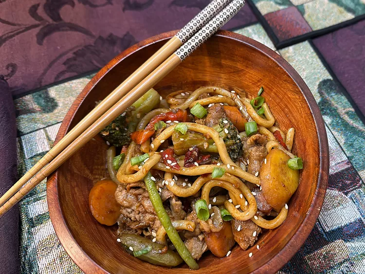

Beef Udon

Description
These spicy vegetable beef udon noodles are a flavorful dish combining tender beef, vegetables,
udon noodles, and a spicy, savory garlic sauce.
Ingredients
- 1 1/2 tablespoons soy sauce
- 1 tablespoon dark soy sauce
- 1 teaspoon chili oil, or to taste
- 1 1/2 tablespoons oyster sauce
- 1 1/2 tablespoons honey
- 1 1/2 tablespoons sesame oil
- 1 1/2 tablespoons water
- 1 1/2 teaspoons sesame seeds
- 1 pound udon noodles
- 1/2 pound rib eye steak, thinly sliced
- 2 green onions, thinly sliced
- 2 cups frozen stir-fry vegetables
Directions
- Stir soy sauce, dark soy sauce, chili oil, oyster sauce, honey, sesame oil, water,
and sesame seeds together in a small bowl; set aside.
- Bring a large pot of salted water to a boil over high heat. Cook udon until tender
with a bite, 8 to 10 minutes. Drain, rinse with cold water, and drain again. Set aside.
- Heat grapeseed oil in the pot over medium-low heat. Add garlic and stir-fry vegetables;
cook and stir for 2 minutes. Stir in beef and cook until completely browned, about 3 minutes.
Add noodles back to the pan, stir in sauce, and toss until everything is evenly coated.
- Season with salt and pepper. Garnish with green onions and serve.